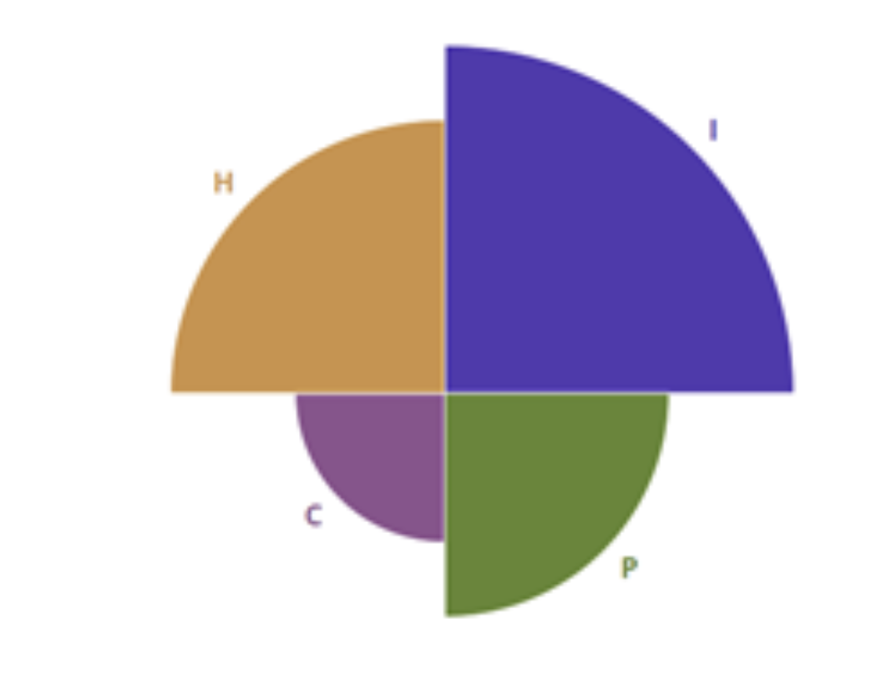
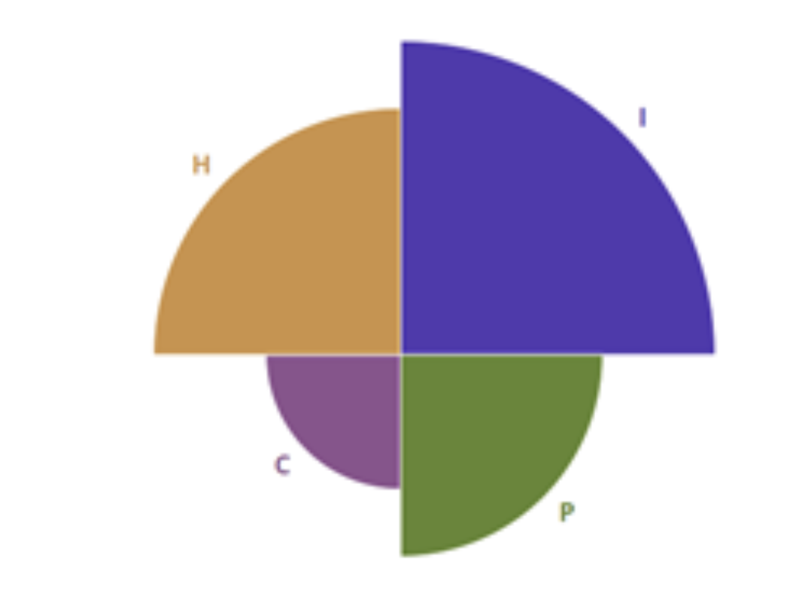

Team Profile
Personal Information

Do Hoang Quan
S3800978
Hello! My name is Do Hoang Quan. I am a Vietnamese, born and raised in Ho Chi Minh City. I want to be an UIUX Designer, to build experiences that enhances and delights people’s lives. So far, I have been learning UIUX design for 2 months and I still have more plans. Combined with coding and IT skills that I will learn here at RMIT, I hope to be a capable IT professional.
View profile
Taesung Yoon
S3847581
Hi! My name is Taesung Yoon. I am 20 years old. My personal email address is dbsxotjdaos@gmail.com. I'm from Korea and I can speak Korean and English. My hubby in this days is doing workout in the gym, cooking, and playing games. Also, I have one cat and her name is "Porori". I got her name from cartoon.
View profile
Jae Jun Kim
S3741333
My name is Jae Jun Kim, my email address is s3741333@rmit.edu.vn. First of all, I am from Republic of Korea thus, I speak Korean and English as well. Normally, most Korean are polite when they meet people because they do not like to have a bad effect on other people and it is a kind of Korean culture. My hobbies are listening to music and handle a computer.
View profileTeam Profile
Do Hoang Quan


Taesung Yoon


Jae Jun Kim

 

How this information is helpful
Although other traits differ, one personality aspect that the team share is that we take and believe information more from the internal world, apparent by the Intuitive trait in the Myers-Briggs test.
Secondly, our team learns most effectively through Tactile and Visual.
Thanks to this common ground, it’s easier for teammates to communicate and share ideas. As we share the same effective methods of learning, we can utilize this knowledge to better get our knowledge across.
Furthermore, our teammates' differences complement each-others. Our team consists of both Introvert and Extrovert, Feelings and Thinkings, as well as Perception and Judging traits. Although issues might arise due to these differences, thanks to our common grounds and focus on communication, we can still collaborate well and utilize our differences to help each-other.
Ideals Jobs
| Quan | Taesung | Jae Jun | |
|---|---|---|---|
| Job | UI/UX Designer | Security Engineer | Database Developer |
| Description | Design user interfaces with the focus on maximizing usability and the user experience | Testing software and monitoring systems for security breaches or intrusions | Ensure that database management systems can handle massive quantities of data |
| Common |
|
||
| Stack | Front-end | Back-end | Back-end |
| Focus | What the user sees and feels when using the product | The security, reliability, and trustworthiness of the product | Ensure efficiency, consistency and scalability of the product and its data |
| Skills required |
|
|
|
| Similar career plans |
|
||
IT Work
What kind of work is done by the IT professional?
It’s in our knowledge that you are a UIUX Designer. Can you please give us a quick explanation of your job?
So a job of a UIUX Designer is to make products like apps and websites that are both visually beautiful and functionally easy-to-use. If you’ve ever loved a product because of how it always gets the job done and never makes you guess, then it’s because a good designer somewhere has done a lot of good work.